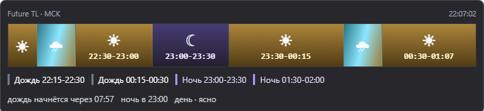
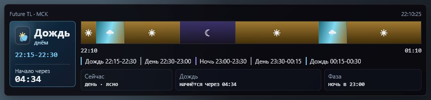
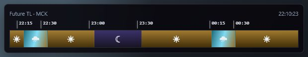
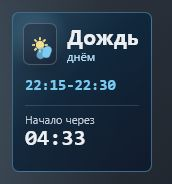

Стандартная
Широкая лента с иконками, интервалами и ближайшими событиями.
Компактное окно поверх Throne and Liberty показывает ближайший дождь, день, ночь и смену фаз без переключения на браузер.

В обычном режиме окно пропускает клики мыши и остаётся поверх игры.
Показывает начало и окончание ближайших фаз в понятном формате.
Можно менять пресет, ширину, масштаб, прозрачность и горячую клавишу.
Новая версия предлагается прямо в настройках overlay.
Все варианты читаемы на фоне игры и настраиваются по ширине, масштабу и прозрачности.

Широкая лента с иконками, интервалами и ближайшими событиями.

Узкая лента с отметками смены фаз и минимальным местом на экране.
Больше контекста: ближайший дождь, события и короткие статусы.

Небольшой блок только о ближайшем дожде и времени до начала или конца.
На странице релиза доступны установщик и portable-файл. Выберите удобный вариант и запустите overlay перед игрой или во время игры.